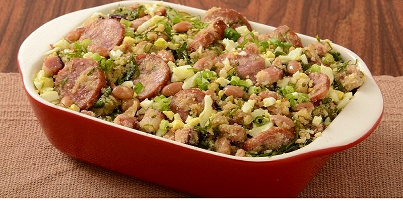

Feijão Tropeiro

INGREDIENTES:
- 02 kg de lombo de porco
- 500g de toucinho
- 02 kg de feijão de corda
- 01 kg de farinha de mandioca torrada
- Cheiro-verde
- Sal a gosto
- Alho amassado
- 1 cebola picada
- 2 Ovos cozidos
PORÇÕES:
Serve 15 pessoas
TEMPO DE PREPARO:
60 minutos
PASSO A PASSO:
- Em uma panela, cozinhe o feijão com água e sal.
- 2. Assim que estiver cozido, escorra e reserve.
- Em outra panela, frite o toucinho picado.
- Retire os torresmos, e reserve.
- Corte o lombo de porco em pedaços e tempere com alho e sal.
- Frite a cebola picada na gordura do toucinho, até dourar.
- Coloque um pouco de açúcar e deixe corar.
- Adicione o lombo e frite bem.
- Depois de frita, junte o feijão cozido, o torresmo, o cheiro-verde picado e adicione a farinha de mandioca, mexendo sempre com uma colher de pau, até ficar bem homogênea.
- Pique os ovos cozidos e junte ao feijão.
- Deixe no fogo por mais alguns minutos.
- Sirva com arroz branco.